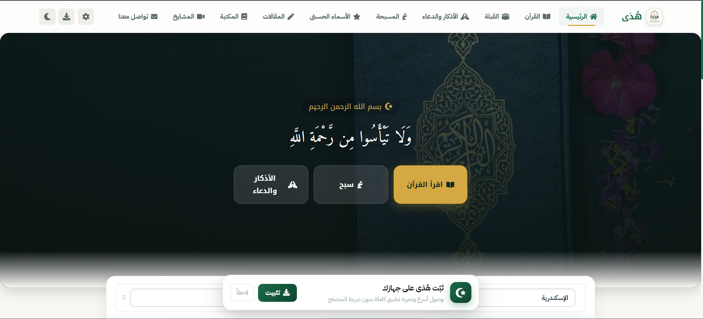
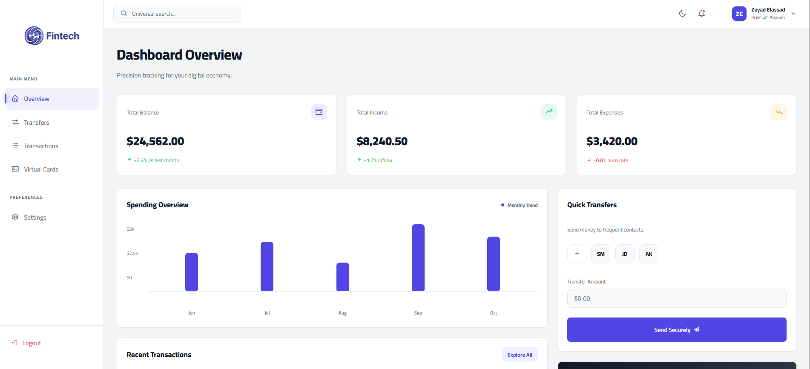
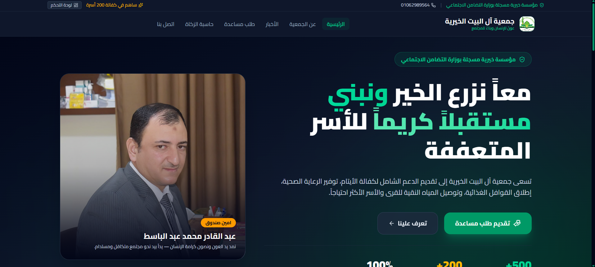
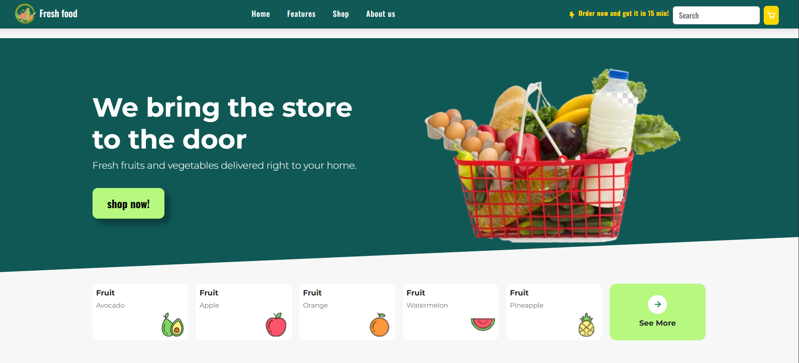

Zeyad Elassad
Full Stack Developer & Software Engineer
Architecting production-ready web applications, high-performance Next.js systems, and robust backend architectures with clean code and sub-second loading.
export const engineer = {
name: "Zeyad Elassad",
role: "Freelance Full Stack Developer",
status: "Available for Client Contracts & Projects",
coreStack: ["Next.js 14", "React 18", "Node.js", "TypeScript", "PostgreSQL"],
architecture: {
uiPerformance: "60 FPS (React.memo tuned)",
lighthouseTarget: 100,
pwaCapability: true
},
contact: "zeyadkassem83@gmail.com"
};{
"specialization": ["Fintech Platforms", "EdTech LMS", "High-Traffic Portals"],
"workflow": ["Component-Driven (Storybook)", "Strict Typing", "Clean APIs"],
"speedTarget": "< 0.5s First Load",
"deliveryMethod": "Vercel Edge / Docker CI/CD"
}# Running production audit against zeyadelassad.dev
$ npx audit-portfolio --strict
✔ Performance: 100/100 (sub-second FCP)
✔ Accessibility: 100/100 (WCAG 2.1 AA compliant)
✔ Best Practices: 100/100 (Secure headers & clean bundle)
✔ SEO: 100/100 (Structured JSON-LD & OpenGraph)
[SYSTEM READY FOR NEW PRODUCTION CONTRACTS]Full Stack engineering with precision and zero fluff.
I am Zeyad Elassad, an independent Full Stack Developer working on production web applications, educational platforms, fintech solutions, and interactive platforms.
I am currently working as a Freelancer — completely open and ready for new projects, client contracts, and full stack development opportunities. I specialize in turning complex requirements into fast, accessible, and maintainable systems using Next.js 14, React, Node.js, and clean database structures.
Full Stack Technical Stack.
Core technologies, architecture patterns, and engineering workflows I leverage in production applications.
- Next.js 14 & React 18Core
- Storybook ComponentsDesign
- TypeScriptStrict
- Vanilla CSS TokensClean
- Tailwind CSSUtility
- PWA & Offline CacheWorker
- React.memo 60fps TuningTune
- Web-Push Notification APIPush
- SCORM 2004 StandardLMS
- Sub-0.5s Load TimeVitals
- Node.js / ExpressAPIs
- PHP & Full Stack ArchitectureServer
- RESTful Endpoints & JSONHTTP
- Watch-Time TelemetryLogs
- Auth & Session ManagementSecurity
- PostgreSQL & MySQLRelational
- Vercel Edge & GitHub ActionsCI/CD
- Docker ContainersDevOps
- Git & Version ControlWorkflows
- Cross-Browser CompatibilityA11y
What I Can Build For You.
حلول برمجية مباشرة وعملية لأصحاب المشاريع والشركات • من الفكرة والتصميم إلى التنفيذ السريع والإطلاق الفعلي.
تطبيقات ويب متكاملة
من الواجهة التفاعلية إلى قاعدة البيانات والسيرفر، بناء منصات متكاملة تشمل لوحات التحكم، المنصات التعليمية، وأنظمة الدفع الإلكتروني.
- لوحات تحكم ذكية (Admin Dashboards)
- منصات تعليمية وأنظمة محتوى (LMS & SaaS)
- ربط بوابات الدفع وحسابات المستخدمين
صفحات هبوط سريعة جداً
تصميم عصري وجذاب يفتح في أقل من ثانية لزيادة المبيعات والتحويلات، مع تجربة مستخدم سلسة متوافقة تماماً مع شاشات الموبايل.
- سرعة فتح فورية (<1s) ترفع المبيعات
- واجهات حصرية وأنيقة تناسب هويتك
- متوافقة تماماً مع الموبايل ومحركات البحث SEO
تطوير وربط الـ APIs
بناء وتأمين سيرفرات الـ Backend، وربط موقعك بالخدمات الخارجية، وهيكلة قواعد بيانات سريعة وقوية تتحمل ضغط العمليات والزوار.
- بناء وتأمين سيرفرات الـ Backend
- ربط بوابات الدفع والخدمات الخارجية
- قواعد بيانات منظمة وسريعة الاستعلام
تسريع المواقع وحل المشاكل
تحسين أداء وسرعة المواقع البطيئة للوصول لـ 95+ في Lighthouse، واكتشاف وحل المشاكل البرمجية والـ Bugs لضمان استقرار الموقع.
- تسريع التصفح ورفع سكور Lighthouse
- كشف وإصلاح الـ Bugs والأخطاء فوراً
- ضغط الأكواد والميديا وتخفيف حمل السيرفر
Selected Production Work.
Live applications shipped with real users, clean architecture, and verified source deployments.

The Muslim Platform
Comprehensive Islamic Web Platform & Recitation Engine
Complete Quran with live audio recitations, prayer times via Adhan.js, interactive Qibla compass, Athkar counter with state persistence, and full offline PWA service workers.
Courses City LMS
Advanced Learning Platform & Student Tracking
Full-featured LMS built with Storybook architecture: real-time video watch-time progress telemetry, student & instructor dashboards, assignments, and modular UI components.

FinTech Money System
Instant Banking & Wallet Transfer Dashboard
High-security transaction platform modeled on modern banking workflows: instant money transfers, real-time balances, recipient verification, and banking-grade security interfaces.

Al Bayt Charity Portal
Aid Case Management & Submission System
Humanitarian case management portal supporting support request submissions, document verification, donor tracking, and administrative case auditing.
TravelSphere Global
Interactive Destination Discovery & Booking
Tourism web application featuring curated destination filtering, interactive tour schedules, dynamic cost calculations, and mobile-first responsive galleries.

FreshFood Storefront
Fast Organic Grocery Market & Express Cart Landing
Lightweight grocery and healthy food storefront with real-time interactive shopping cart calculations, nutritional highlights, and zero framework overhead.
My Engineering Journey.
Specialized academic foundations, production contracts, and architectural discipline.
Borg El Arab Technological University (IT Department)
Full Stack Architecture & Independent Production Contracts
- Architected production Next.js 14 platforms including Quran audio synchronization, prayer times calculation engine (Adhan.js), and complete offline PWA caching.
- Engineered enterprise EdTech LMS using Storybook components, SCORM 2004 standards, and real-time student watch-time progress telemetry.
- Developed secure FinTech instant banking transaction interfaces with verified recipient lookups and state management.
WE Applied Technology School
Graduated with Honors • Software Foundations & Relational Databases
- Built deep foundational mastery in relational database schemas (MySQL), server-side systems (PHP), OOP, and data structures.
- Delivered the Al Bayt Charity humanitarian cases management system with role-based auth, document uploads, and case auditing.
- Built FreshFood lightweight grocery storefront with interactive cart calculations and sub-0.5s zero-framework load speeds.
60 FPS Engineering & Sub-500ms Performance
Speed, Clean Architecture & Zero Bloat
- Relentless focus on performance budgets: optimizing React render cycles with memoization and eliminating layout thrashing.
- Sub-500ms server response targets, lightweight WebP media optimization, and 100/100 Lighthouse benchmark scores.
- Full compliance with WCAG 2.1 AA accessibility, keyboard navigation, and semantic HTML5 architecture.
Let’s build your next application.
Available immediately for freelance projects, technical contract work, and full stack development. Let's discuss your project scope, timeline, and architectural requirements.